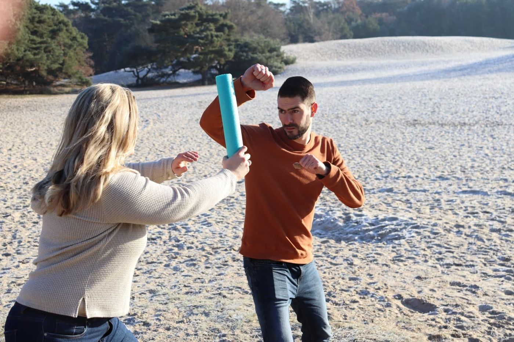

Weerbaarheidstraining
Vind je het moeilijk om je grenzen aan te geven, “stop” te zeggen of voor jezelf op te komen? Hier leer je je eigen kracht ervaren.


Zo werkt weerbaarheidstraining
In de weerbaarheidstraining leer je je eigen kracht ervaren, zelfvertrouwen voelen en de baas zijn over je eigen keuzes. Je oefent vaardigheden op een veilige manier — met je lichaam als startpunt: stevig staan, ademhaling, houding en stemgebruik.
Waarbij kan het helpen?
- Grenzen herkennen en duidelijk aangeven
- “Nee” en “stop” zeggen zonder schuldgevoel
- Steviger staan bij plagen of groepsdruk
- Meer zelfvertrouwen in lastige situaties
- Rustiger reageren bij spanning
Elk traject is maatwerk: we sluiten aan bij jouw vraag en tempo.
Hoe ziet een traject eruit?
Kennismaken
Vrijblijvend gesprek; bij groepen stemmen we af met ouders of begeleiding.
Startpunt bepalen
We kijken waar jij nu staat en wat je wilt leren.
Trainen
Actieve bijeenkomsten: oefenen met echte situaties, houding en stem.
Borgen
We herhalen, evalueren en maken afspraken voor thuis of school.
De groepstraining bestaat uit een basistraining (module 1) van vijf bijeenkomsten van 1,5 uur, met een optionele vervolgtraining (module 2). Groepen hebben minimaal 6 en maximaal 8 deelnemers. Individuele training is ook mogelijk.

Wat kost het?
Groepstraining: € 425,00 per persoon per module (vijf bijeenkomsten van 1,5 uur). Je kunt kiezen voor alleen module 1.
Individueel: € 85,00 per wekelijkse sessie van 60 minuten.
Vergoeding: via PGB (Wmo/Wlz) is voor individuele begeleiding vaak vergoeding mogelijk.
Vergoeding hangt af van je situatie, verzekeraar of gemeente — we geven hierover geen garanties, maar denken graag met je mee.
Wie verzorgt dit aanbod? Sander Zijdewind, weerbaarheidstrainer met vele jaren ervaring in de gehandicaptenzorg.
Meld je aanGoed om te weten
Is de training geschikt voor mensen met een beperking?
Ja. We hebben ruime ervaring met deelnemers met een verstandelijke, lichamelijke of psychische beperking en passen oefeningen daarop aan.
Moet ik sportief zijn om mee te doen?
Nee. Alle oefeningen zijn op jouw niveau; het gaat om ervaren, niet om presteren.
Kan ik alleen module 1 volgen?
Ja, de basistraining staat op zichzelf. Module 2 is een optionele verdieping.
Kan de training ook op locatie van een organisatie?
Ja, voor organisaties verzorgen we trainingen op locatie. Kijk bij “Voor organisaties” of neem contact op.
Klaar om te beginnen?
Meld je aan of stel je vraag — binnen twee werkdagen nemen we contact met je op om een vrijblijvende kennismaking te plannen.